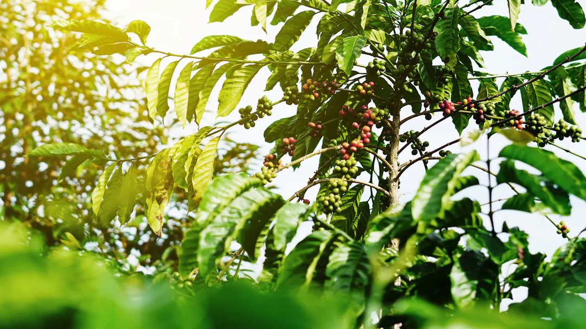

Ringkasan Eksekutif: Sejarah kopi bermula di hutan Ethiopia pada abad ke-9 M dan menyebar ke seluruh dunia. Dari budidaya awal di Yaman oleh kaum Sufi, hingga revolusi kedai kopi di Eropa. Di Indonesia, jejak kopi dimulai sejak era VOC tahun 1696, melewati masa Tanam Paksa (Cultuurstelsel), hingga kini menjadi produsen kopi spesialti terbaik dunia.
1. Awal Mula di Ethiopia
Kisah kopi bermula di wilayah Kaffa, Ethiopia. Menurut legenda, seorang gembala bernama Kaldi memperhatikan kambingnya yang menjadi sangat lincah setelah memakan buah kopi merah dari pohon liar. Ethiopia hingga kini dianggap sebagai "tempat kelahiran" genetik kopi Arabika dunia.

2. Penyebaran ke Dunia Islam
Pada abad ke-15, kopi mulai dibudidayakan di Yaman dan diekspor dari pelabuhan legendaris Mocha. Para pemuka Sufi memanfaatkan kopi sebagai stimulan untuk menjaga kewaspadaan saat beribadah malam. Menjelang 1554, kedai kopi pertama di dunia dibuka di Istanbul, Turki (Ottoman Empire).
3. Masuknya Kopi ke Eropa
Abad ke-17 menandai kedatangan kopi di Eropa lewat jalur perdagangan Mediterania. Kedai kopi pertama dibuka di Venesia (1645), disusul London (1652).
4. Era Kolonial & Kopi di Indonesia
Belanda (VOC) membawa bibit Arabika ke Batavia (Jakarta) pada tahun 1696. Meskipun percobaan pertama gagal, bibit kedua pada 1699 tumbuh subur dan menjadikan Jawa sebagai pengekspor kopi utama.
Garis Waktu (Timeline) Kopi
Scroll ke bawah — versi baru, gampang dibaca di HP:
Legenda Kaldi & kambing lincah di Ethiopia.
Budidaya pertama di Yaman (Mocha).
Kedai kopi pertama di Istanbul.
VOC membawa bibit kopi ke Jawa.
Ekspor pertama kopi Jawa ke Eropa.
Dimulainya Sistem Tanam Paksa.
Introduksi Robusta ke Indonesia.
5. Sejarah Regional Indonesia
Rincian wilayah dan sejarah lokal perkembangan kopi di Nusantara:
Jawa (Java)
Kopi diperkenalkan VOC tahun 1696. Berkembang pesat di abad 18–19. Tokoh penting seperti Jacob Mossel mengawal pertanian ini.
Sumatra (Gayo)
VOC mulai menanam di Aceh pertengahan 1700-an. Sosok Datuk Malikul Saleh dikenal sebagai perintis awal ekspor kopi Aceh.
Sulawesi (Toraja)
Introduksi Arabika sekitar tahun 1750 di Luwu. Toraja tumbuh legendaris berkat dukungan raja-raja lokal.
Bali (Kintamani)
Kopi dibawa dari Lombok abad 18. Perkebunan besar awalnya dikelola Kesultanan Buleleng.
Maluku & Papua
Bibit mencapai Maluku 1700-an. Di Papua (Wamena), kopi berkembang organik di Lembah Baliem dan menjadi salah satu yang terbaik.
6. Gerakan Kopi Modern
| Fitur | Arabika | Robusta |
|---|---|---|
| Rasa | Halus, Kompleks, Fruity | Kuat, Pahit, Earthy |
| Kafein | 1 – 1.5% | 2 – 2.5% |
| Ketinggian | 1.200 – 2.000 mdpl | 0 – 800 mdpl |
Rasakan Sejarahnya dalam Secangkir Kopi
Warisan Sumatra yang bisa kamu seduh di rumah — Arabika Sidikalang & Robusta Gayo.
Referensi & Sumber:
- • UNESCO Courier: "Ethiopia, the home of coffee" (2023).
- • Eduard Douwes Dekker: "Max Havelaar" (1859).
- • International Coffee Organization (ICO) Reports.
- • World Coffee Research (WCR) Varieties.